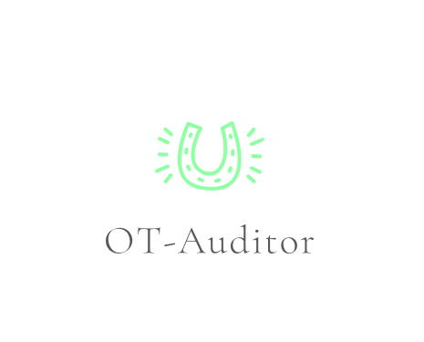

OT-Auditor(Dockerfile)
Project:
https://gitlab.com/ot-auditor
Opstree Auditor
Version Info: v0.01
TYPE
REPORT FILE
DESCRIPTION
Dockerfile
result
This Report will contain all checks related to Dockerfile